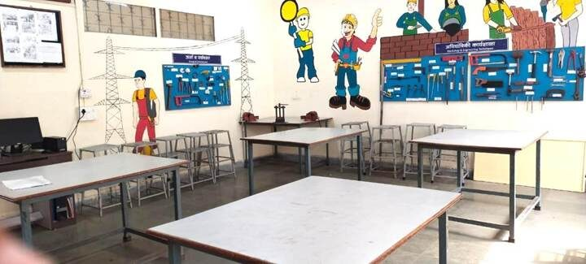
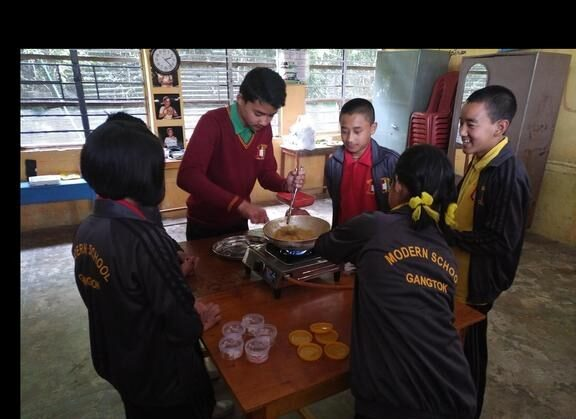
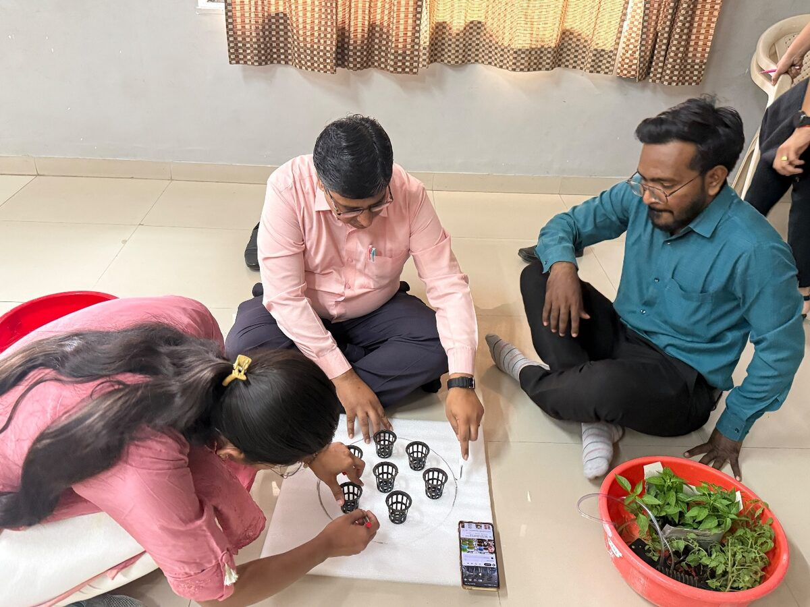
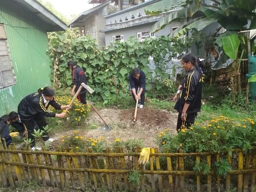
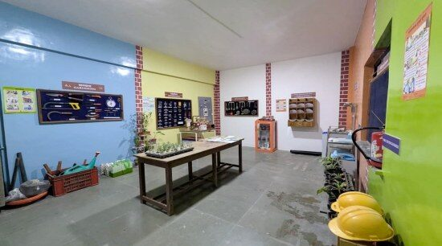

Why start with what it is not
CBSE schools must set up a Composite Skill Lab by 22 August 2027, and much of the market now sells a version of the CSL that CBSE never describes.
After 20 years of setting up skill education in schools, Lend A Hand India sees the same seven mistakes again and again. Most happen before the purchase order, and most are costly to undo.
Seven things a CSL is not
1. Not a robotics and AI lab
CBSE’s CSL guidelines ask for at least three skill subjects across all three forms of work: life forms, machines and materials, and human services. Robotics covers one corner of one.
What works: plan the garden, food, health and services zones first, then add the digital station.

2. Not a compliance checkbox
A lab built for inspection day often stays locked the rest of the year. CBSE expects 110 hours of skill education a year for Classes 6–10 , which means five periods per week.
What works: fix the timetable, the teacher and the first term of projects before the equipment list.
3. Not your ATL or IT lab with a new name
The guidelines are explicit: an Atal Tinkering Lab, IT lab or home science lab cannot be converted into a CSL. They can only support it.
What works: build the CSL as its own multi-sector room, and map which existing labs can carry which projects.(CSL Guidelines)
4. Not a one-time purchase
Seeds, fabric and food run out, tools break and teachers move on. Labs budgeted only for setup tend to stall in year two.
What works: budget for three years of consumables, maintenance and training, and name a lab in-charge.
5. Not a trade workshop
In Classes 6–10, the CSL is for education through work, not job training. A student who can make a wood joint but cannot explain why it holds has been trained, not educated.
What works: open each session with a question and close it with students explaining what they found.
6. Not outsourced to a visiting trainer
A lab that only comes alive when a trainer visits will not last. CBSE expects the school’s own teachers to lead, with support from local experts.
What works: train your teachers in Kaushal Bodh and Kaushal Vikas, and mentor them through the first year.

Teachers train hands-on, so the lab runs without an outside trainer.
7. Not a catalogue kit
The same packaged lab ships to schools in Pune, Kohima and Dubai. CBSE asks each school to choose subjects for its own community.
What works: start local. A school near orchards might pick food processing; a town school might pick retail and healthcare.

The lab is the easy part
Skill education is not about setting up a lab. It is about changing how students learn. That is why Lend A Hand India works as an implementation partner, not an equipment vendor, drawing on 20 years of practice and contributions to the CBSE CSL guidelines and NCERT’s skill education textbooks.

Not sure where your plan stands? Book a School Readiness Consultation, or visit Karigar, our School of Applied Learning in Pune, to see a working lab.
Read next: What Should a Composite Skill Lab Serve? and Composite Skill Lab Checklist.